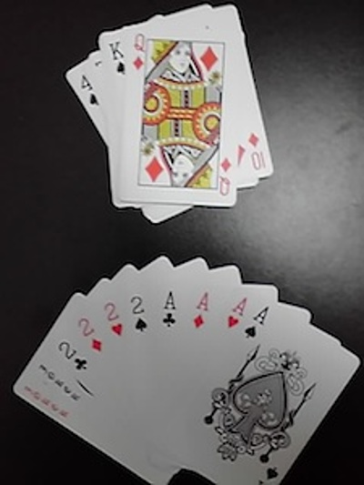

Members
| 伊藤勇斗（いとう ゆうと） | ||
|  | 趣味 | 麻雀、トランプ |
|---|---|---|
| 好きな山行スタイル | たるみ | |
| 楽しかったこと | 全体的に楽しい | |
| つらかったこと | クリスマス忘年会での闇鍋のぶどう | |
| 今年の目標 | 仕事を覚え、指導できるようになる | |
| 好きなマンガ | ムダヅモなき改革、咲、アカギ | |
|
自前のトランプを持って来て、僕たちをトランプの奥深い世界にいざなってくれる。 大学から始めたという麻雀も結構好きらしく、ワンゲルの麻雀を覗くと伊藤がいる、と言える日もそう遠くないはず。 | ||
| ひと言：一度でいいからやってみたい技＝ライジングサン | ||
| 桑原祐也（くわはら ゆうや） | ||
 |
趣味 | 将棋、野球 |
|---|---|---|
| 好きな山行スタイル | 道、沢 | |
| ワンゲルで一番楽しかったこと | 夏合宿大雪、槍穂 | |
| ワンゲルで一番つらかったこと | 藪トレ金巻 | |
| 今年の目標 | 南ア縦走、スノボ、進級 | |
| 夢 | 宇宙に行く | |
| 愛知出身。ちょっと変な人。役に立つか分からないような知識を色々持っている。わさびを一度に大量に摂取すると危険であることを身をもって証明した。 | ||
| ひと言：進級したいです。 | ||
| 成田岳（なりた がく） | ||
 |
趣味 | 音楽鑑賞 |
|---|---|---|
| 好きな山行スタイル | のんびり山行全般、夏山縦走、残雪期 | |
| ワンゲルで一番楽しかったこと | 一年冬山将棊頭、初冬爺ヶ岳、夏合宿大雪 | |
| ワンゲルで一番つらかったこと | 闇鍋 | |
| ワンゲルで一番恥ずかしかったこと | スキー合宿でコスプレ | |
| 今年の目標 | 3000mで正月を迎える | |
| やってみたいこと | 黒部源流スキー | |
| ワンゲルのシェフ。食に対して強いこだわりを持ち、計画に２４時間以上かかったという夏合宿の食事は非常に美味しかった。土砂降りの予報でも晴れさせてしまうほどの晴れ男だが、「これは俺の人徳のおかげだな」と言ってありがたみを半減させてしまう。 | ||
| ひと言：ワンゲルにいると、いろんな意味で人目を気にしなくなる気が・・・ | ||
| 松尾直弥（まつお なおや） | ||
 |
最近はまってること | 激辛料理、写真 |
|---|---|---|
| 好きな山行スタイル | ぜんぶ | |
| 嫌いなもの | 虫全般 | |
| 今年の目標 | 部内安全無病息災無事故無違反火の用心 | |
| 最高の瞬間 | 積雪期の快晴無風の山頂 | |
| 上級生からかわいがられ、下級生にしたわれる前年度の主将。猪突猛進。筋肉がすごい。天然なのか狙ってなのかいつも皆を笑わせてくれる。独自の理論や名言を数多く残す。でも山では頼りになります。スキーはアグレッシブ。車の運転もアグレッシブ。3000mでも冬山でもテントを使わず寝ることができる。そのため山小屋のご主人から大変気に入られる。山行参加日数ナンバーワン。 | ||
| ひと言：晴れ男さん晴れ女さんぜひ来てね | ||